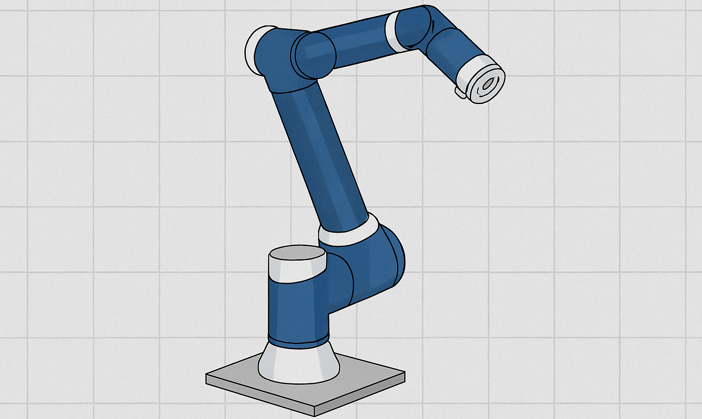
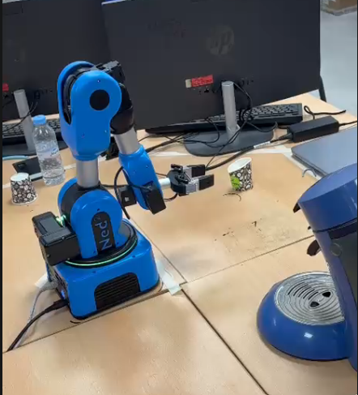
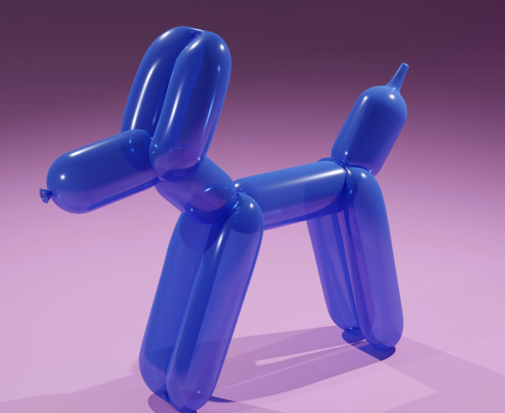
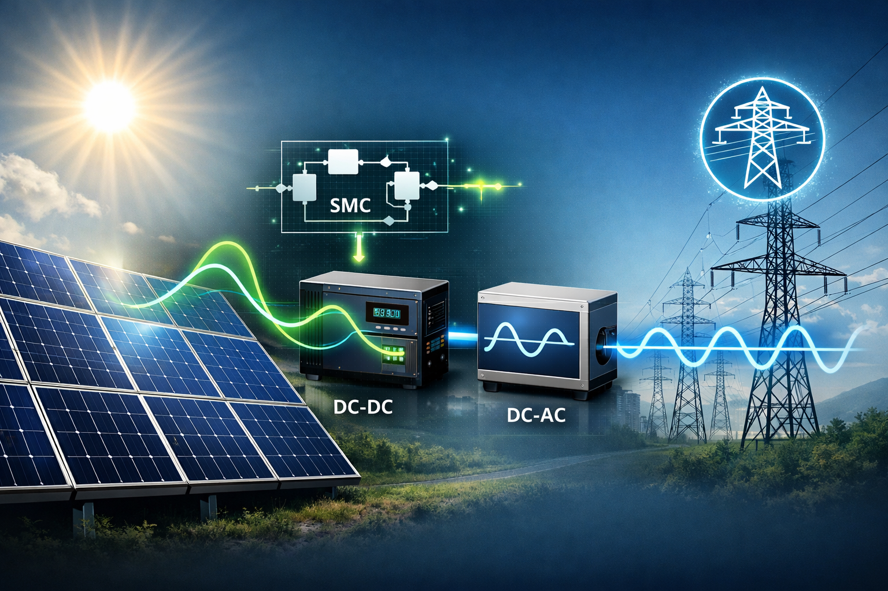

I'm Fatima Zahra Rabouli, a Master's student in Smart Industry with a passion for automation, robotics, and digital innovation. I blend technical precision with creative problem-solving to build smarter, more connected systems.d methodical thinking to every challenge. My goal? To contribute to smarter, more connected industries—while staying open to new ideas and collaborations.

Development of a smart trash bin using ESP32, ultrasonic sensor, and servo motor, synchronized with a 3D digital twin in Blender. When the bin opens in reality, the digital model opens simultaneously.

A compact and elegant weather application displaying real-time conditions. Features a smooth night-mode interface with dynamic icons, temperature, wind speed, and humidity for a seamless user experience.

A modern and responsive contact form built with HTML and CSS. Includes a friendly greeting, clean input fields, and a stylish submit button. Visitors can send messages directly to my inbox — I’ll receive them instantly!

Design and development of a robot using Arduino, equipped with 3 ultrasonic sensors, 4 wheels, and various electronic components. The robot navigates autonomously by detecting and avoiding obstacles in real time.

A responsive and animated To-Do List application built with HTML, CSS, and JavaScript. Users can add tasks, mark them as completed, delete them, and even save their list using local storage. Includes a personalized greeting and Enter-key functionality for smooth interaction.

A beginner-friendly 2D platformer developed using the Godot engine. Features smooth player movement, animated sprites, collision detection, and interactive elements. Designed to explore game mechanics and level design with a playful touch.

Development of an inclusive communication system using IoT devices, speech-to-text conversion, and sign language recognition. The project aims to facilitate real-time interaction between deaf/mute individuals and society through accessible digital tools.

Implementation of a co-simulation framework between MATLAB/Simulink and Gazebo to control an industrial robotic manipulator (UR10). The project integrates inverse kinematics, control algorithms, and digital twin validation to ensure realistic testing before deployment on real robotic systems.

Development of a digital twin system for a quadruped robot designed to assist firefighters in hazardous environments. The project integrates real-time simulation, sensor feedback, and autonomous navigation using MATLAB/Simulink and Gazebo. The digital twin enables predictive control, mission planning, and safety validation before field deployment.

Practical implementation of Blockly programming for the Niryo Ned2 collaborative robot using the NiryoStudio platform. The project includes a realistic “Coffee Robot” scenario and an imaginative task simulating a keyboard “Enter” key press. Students explore joint and Cartesian control, position recording, and safe automation through visual programming.

A creative 3D modeling project in Blender focused on designing a balloon dog sculpture. The project uses primitive shapes (cylinders and spheres) combined with modifiers to replicate the twisted balloon aesthetic. Materials are configured with glossy shaders to achieve a realistic plastic look, and lighting is set up to highlight the playful and artistic nature of the model.

Implementation of a MATLAB/Simulink project focused on controlling a photovoltaic (PV) system connected to the grid using Sliding Mode Control (SMC). The work includes system modeling, converter design, MPPT strategy, and validation through simulation results. The project demonstrates robustness, fast response, and applicability to nonlinear systems, while addressing challenges such as chattering.
Explore my academic journey — from foundational physics to advanced smart industry systems.
Final-year Master's student in Smart Industry with a strong foundation in automation, robotics, and digital modeling. Passionate about intelligent systems and industrial innovation, I combine technical precision with creative problem-solving to design smarter, more connected environments. My academic journey and hands-on projects reflect a commitment to modernizing production through IoT, embedded programming, and digital twins. Always curious and methodical, I’m driven by the challenge of transforming ideas into impactful solutions.